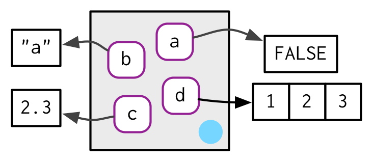
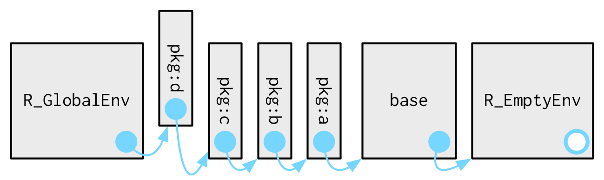
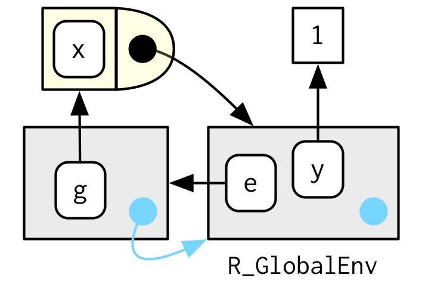

Chapter 8 Environments
參考 https://holtzy.github.io/Pimp-my-rmd/
8.1 Introduction
The environment is the data structure that powers scoping. 相關概念:lexical scoping, namespaces, and R6 classes。
這個文件需要
Quiz
If you can answer the following questions correctly, you already know the most important topics in this chapter. You can find the answers at the end of the chapter in answers.
List at least three ways that an environment is different to a list.
What is the parent of the global environment? What is the only environment that doesn’t have a parent?
What is the enclosing environment of a function? Why is it important?
How do you determine the environment from which a function was called?
How are
<-and<<-different?
Outline
Environment basics introduces you to the basic properties of an environment and shows you how to create your own.
Recursing over environments provides a function template for computing with environments, illustrating the idea with a useful function.
Explicit environments briefly discusses three places where environments are useful data structures for solving other problems.
Prerequisites
這個章節利用了套件rlang裡的函數，來探索環境物件。
在rlang套件中,env_函數是設計用來和pipe一起工作的,這裡不深入。
8.2 Environment basics
基本上一個 environment 類似名稱串列(named list),但是有4個例外:
- 名稱唯一(就是變數唯一)
- 名稱沒有順序關係
- 會有一個parent
- 當改變的時候,不會自動複製 (Environments are not copied when modified).
分別探索上面四點:
8.2.1 Basics
要建立environment, 使用 rlang::env(). 類似使用list(),也是一組名稱-值的配對。:
建立environment物件,利用函數 new.env() 不用管參數 hash 和 size。注意不能利用$<-同時定義和建立 parameters; 例如,
e1 <- env( ** a <- FALSE ** ) # error
.
environment物件可以想成是一個袋子,或是names集合。因為沒有次序關係

就像在 names and values, 討論的,這個物件是參考為基礎.(in C concept) 不會有copy on modifying。而且,環境物件可以自己指向自己(recursion)

沒有指派的環境變數,只會顯示記憶體位址:
要知道內容可以使用 env_print() :
parent:
bindings:
* a:
* b:
* c:
* d:
想要知道目前有哪些binding(名稱-值 配對)可以利用 env_names()
[1] "a" "b" "c" "d"
要列出環境下的繫結，在R 3.2.0 以上,可以使用函數names() ,之前的版本則是 ls(), 但是要注意的是ls 的參數 all.names 內設是 FALSE 因此.開頭的看不到。.
8.2.2 Important environments
另外參考 Special environments。
current_env() 可以知道目前程式碼的執行環境。例如,當我們互動執行RCODE的時候,環境通常是 總體環境,或者由函數global_env()可以得到。這個總體環境有時候就叫“workspace”，同時,這也是函數外面所有互動計算發生的地方。
環境物件的比較不能用==,只能用函數identical()。
[1] TRUE
Error in global_env() == current_env():
只有基元或串列類型才能做比較 (1)
globalenv()和.GlobalEnv: 拿到global environmentand。environment():拿到目前的環境
global environment 的名稱為 R_GlobalEnv 。
8.2.3 Parents
每一個環境物件都有一個parent。parent 也一個環境物件。在方塊圖中,parent以藍色圈表示,並用箭頭指向另一個環境物件。
這個parent用來建立 lexical scoping: 如果name沒有在某個環境物件找到,R會重複的在parent中找。
函數env()可以用來建立一個沒有名字的環境
You can set the parent environment by supplying an unnamed argument to env(). If you don’t supply it, it defaults to the current environment.

函數 env_parent()可以用來找出某個環境物件的parent:
parent.env() === env_parent()
所有的環境物件中只有一個名稱為R_EmptyEnv的物件沒有parent(用空心藍色表示):

emptyenv() === empty_env()
試圖利用函數env_parent()找空環境物件的parent會發生錯誤:
Error: The empty environment has no parent
函數 env_parents()可以找出目前環境物件的所有祖先:這個函數會繼續直到遇上global environment 或是空環境物件。上述過程可以利用last環境物件控制。
[[1]]
[[2]] $
[[1]]
[[2]] $
可以利用Use parent.env() 找到環境的parent，但是base中沒有可以找出所有祖先的函數。
8.2.4 Getting and setting
存取環境中元素的方法和list類似:使用 $ 和 [[:
[1] 1
[1] 3
但是不能使用 [[ +數字索引,也不能單獨使用 [:
Error in e3[[1]]:
取子集環境時的引數不正確
Error in e3[c("x", "y")]:
'environment' 類型的物件無法具有子集合
當環境中的繫結不存在時(簡單點,就是變數不存在時)$ 和 [[ 會傳回 NULL 但不會引發錯誤,如果要有錯誤警告,則利用 env_get() :
NULL
Error in env_get(e3, "xyz"):
找不到物件 'xyz'
當繫結不存在,但是想要有預設值傳回時,可以利用參數 default .
[1] NA
另有兩種方式可以在環境物件加入繫結:
env_poke()8 takes a name (as string) and a value:[1] 100env_bind()allows you to bind multiple values:[1] "x" "y" "z" "a" "b"
env_has(): 是否環境中有繫結
a
TRUE
不能像是list中刪除元素的方式(指派NULL給元素)，而必須使用 env_unbind():
a
TRUE
a
FALSE
從一個物件Unbinding 解除名稱，並不會刪除物件，是否刪除物件是 garbage collector的工作.。可以參考 GC.
See get(), assign(), exists(), and rm(). These are designed interactively for use with the current environment, so working with other environments is a little clunky. Also beware the inherits argument: it defaults to TRUE meaning that the base equivalents will inspect the supplied environment and all its ancestors.
8.2.5 Finalisers
Add something once rlang has an API. Also mention in data structures below
8.2.6 Advanced bindings
There are two more exotic variants of env_bind():
env_bind_exprs()creates delayed bindings, which are evaluated the first time they are accessed. Behind the scenes, delayed bindings create promises, so behave in the same way as function arguments.Warning: `env_bind_exprs()` is soft-deprecated as of rlang 0.3.0. Please use `env_bind_lazy()` instead. This warning is displayed once per session.[1] 1user system elapsed 0 0 1[1] 1user system elapsed 0 0 0Delayed bindings are used to implement
autoload(), which makes R behave as if the package data is in memory, even though it’s only loaded from disk when you ask for it.env_bind_fns()creates active bindings which are re-computed every time they’re accessed:Warning: `env_bind_fns()` is soft-deprecated as of rlang 0.3.0. Please use `env_bind_active()` instead. This warning is displayed once per session.[1] 0.0808[1] 0.834The argument to the function allows you to also override behaviour when the variable is set:
env_bind_fns(current_env(), z2 = function(val) { if (missing(val)) { 2 } else { stop("Don't touch z2!", call. = FALSE) } }) z2[1] 2Error: Don't touch z2!
See ?delayedAssign() and ?makeActiveBinding().
8.2.7 Exercises
List three ways in which an environment differs from a list.
Create an environment as illustrated by this picture.

Create a pair of environments as illustrated by this picture.

Explain why
e[[1]]ande[c("a", "b")]don’t make sense wheneis an environment.Create a version of
env_poke()that will only bind new names, never re-bind old names. Some programming languages only do this, and are known as single assignment languages.
8.3 Recursing over environments
If you want to operate on every ancestor of an environment, it’s often convenient to write a recursive function. This section shows you how, applying your new knowledge of environments to write a function that given a name, finds the environment where() that name is defined, using R’s regular scoping rules.
The definition of where() is straightforward. It has two arguments: the name to look for (as a string), and the environment in which to start the search. (We’ll learn why caller_env() is a good default in calling environments.)
where <- function(name, env = caller_env()) {
if (identical(env, empty_env())) {
# Base case
stop("Can't find ", name, call. = FALSE)
} else if (env_has(env, name)) {
# Success case
env
} else {
# Recursive case
where(name, env_parent(env))
}
}3個情況:
The base case: 到達empty environment 沒有parent無法繼續,所以丟出error.
The successful case: 在env中找到name ，成功,所以傳回env。.
The recursive case: 在env中找不到,繼續在parent中找。.
These three cases are illustrated with these three examples:
Error: Can't find yyy
想像有兩個環境物件(如圖):

where(a, e4a)will findaine4a.where("b", e4a)doesn’t findbine4a, so it looks in its parent,e4b, and finds it there.where("c", e4a)looks ine4a, thene4b, then hits the empty environment and throws an error.
It’s natural to work with environments recursively, so where() provides a useful template. Removing the specifics of where() shows the structure more clearly:
f <- function(..., env = caller_env()) {
if (identical(env, empty_env())) {
# base case
} else if (success) {
# success case
} else {
# recursive case
f(..., env = env_parent(env))
}
}8.3.1 Exercises
Modify
where()to return all environments that contain a binding forname. Carefully think through what type of object the function will need to return.Write a function called
fget()that finds only function objects. It should have two arguments,nameandenv, and should obey the regular scoping rules for functions: if there’s an object with a matching name that’s not a function, look in the parent. For an added challenge, also add aninheritsargument which controls whether the function recurses up the parents or only looks in one environment.
8.4 Special environments
這裡討論 package environments. 然後探討當函數建立時,綁入函數的函數環境。還有當函數被呼叫時的執行環境(ephemeral)。
套裝環境主要是看這些環境如何支援namespaces。同時,namespace讓package每次載入的時候,都有一樣的行為,而不售其他packages載入先後的影響。
8.4.1 Package environments and the search path
每個套件經由library() 或 require() 接入成為總體環境的parent。而最後一個接入的套件,則是總體環境的第一個parent:
attr(,"name")
[1] "package:usethis"
attr(,"path")
[1] "/home/linchao/R/x86_64-pc-linux-gnu-library/3.5/usethis"
And the parent of that package is the second to last package you attached:
attr(,"name")
[1] "package:devtools"
attr(,"path")
[1] "/home/linchao/R/x86_64-pc-linux-gnu-library/3.5/devtools"
如果一層一層parent回朔,就可以到每個套件被接入的順序,這也是R執行中會用到的 search path 因為這些環境的所有物件都可以經由 top-level interactive workspace找到。
[[1]] $
[[2]] $
[[3]] $
[[4]] $
[[5]] $
[[6]] $
[[7]] $
[[8]] $
[[9]] $
[[10]] $
[[11]] $
[[12]] $
[[13]] $
[[14]] $
[[15]] $
[[16]] $
[[17]] $
[[18]] $
[[19]] $
[[20]] $
... and 5 more environments
函數 search()可以找出環境物件的名稱。
最後兩個環境物件都一樣:
Autoloads環境物件,利用 delayed bindings來節省記憶體，也就是在需要的時候才載入(loading)package中的物件(例如大型資料集)。base environment,
package:base或簡稱base, 是base 套裝的環境物件。用來 載入其他套裝(bootstrap)。利用函數base_env()存取.
利用圖型表示:

當利用 library() attach其他套件的時候, 總體環境的parent馬上改變:

8.4.2 The function environment
當函數被建立的時候,現有的環境會被繫結。稱為function environment, 主要用來支援lexical scoping. 在電腦語言中,當函數紀錄它們的運作環境時,我們說這個函數屬於 closures。,這也是為甚麼這個字眼經常在R語言中出現。.
利用函數 fn_env()可以得到函數的環境物件:
一樣利用函數 environment(f) 可以找到函數 f的環境.
在圖形中,函數被畫成類似子彈,而彈頭的部分繫結環境。

在這個案例中,f()繫結的環境物件,就是繫結名稱f的環境。但並不一定總是這樣，例如在下一個例子中,g被繫結在新環境物件e中。但是函數g()繫結的是global environment。這之間的分別是我們如何找到g和g如何找到他的變數。

8.4.3 Namespaces
在上面的圖形中,我們已經知道套件的parent會隨著之前套件載入的順序不同而不同。這就導致R程式設計者必須保證個別套件上如果使用別的套件的函數，必須是原始目的的那一個。namespaces 就是為此目的而產生: 每個套件必須的使用必須一致,而不管使用者如何載入套件.
以 sd()為例子:
function (x, na.rm = FALSE)
sqrt(var(if (is.vector(x) || is.factor(x)) x else as.double(x),
na.rm = na.rm))
sd() 必須使用函數 var(), 因此這個var()到底來自 global environment,還是其他接入(attached)的套件的這種問題必須避免。 R avoids this problem by taking advantage of the function vs. binding environment described above.
每個套件中的函數和一對環境物件有關:套件環境(之前學到的)還有namespace環境物件。
package environment: 是套件的外部介面，這是R使用者如何在接入的套件中尋找函數的地方(或者可以利用
::) package enviromnent 的parent 由搜尋路徑決定(可以利用search()知道)決定(也就是載入的順序)namespace environment:是套件的內部介面。package environment 控制我們如何找到函數,而namespace environment控制函數如何找到變數。
在package environment的每個繫結也可以在namespace environment中找到。這樣可以確保每個函數可以使用套件中的其他函數。但是有些繫結只能在namespace 中找到(例如內部或非輸出物件),這種內部物件通常是用來隱藏一些繁瑣的且不需要給使用者看到的細節。;

每個namespace environment 有一樣的祖集合:
每個namespace有imports的環境物件，其中包含了套件中用到的所有函數繫結。而所謂輸入環境實際由套裝開發人員在檔案
NAMESPACE指定明確的輸入每個
base函數,很繁瑣,所以R直接設定import enviroment的parent是base *namespae*[^1]。base namespace 的parent是總體環境(#global environment).參考下圖,這種設計導致在import environment中找不到繫結時,會開始再總體環境中尋找,而之前提過總體環境通常是互動環境下名稱搜尋的開始路徑,這也導致搜尋的方式受到套件載入順序的影響。因此,R提供了了
R CMD check來警告此種情況的發生。(雖然有麻煩,但是由於S3 方法的dispatch 關係,此種方式仍然留著)

綜合上述,可以得到下圖::

所以當 sd() 搜尋var 的值的時候,搜尋順序是受到開發者的指定(在檔案NAMESPACE利用import)，而不會受到套裝使用者的影響。這樣保證每次套件程式碼執行的時候,都一樣,而不會受到一般使用者載入套件的順序而影響。
注意在package和namespace兩種環境之間沒有直接的連結.連結是由函數環境定義。
8.4.4 Execution environments
execution environment. 下面的函數第一次執行的時候會傳回甚麼?第2次呢?
g <- function(x) {
if (!env_has(current_env(), "a")) {
message("Defining a")
a <- 1
} else {
a <- a + 1
}
a
}再一次利用下面的調用,確認你的答案:
Defining a[1] 1
Defining a[1] 1
Defining a[1] 1
這個函數每次執行都傳回一樣的答案,參考 a fresh start. 每次函數被調用的時候,一個新的環境都會被建立來主導執行。這種環境稱為執行環境。而執行環境的parent為 function environment.
用另一個簡單點的例子說明. (圖中,執行環境的parent間接表示:經由函數環境).

執行環境(execution environment)短暫存在,當函數執行完畢通常會被GC。在幾種情況下,會在記憶體存在比較久,第一種是回傳給另一個變數:
parent:
bindings:
* a:
* x:
Another way to capture it is to return an object with a binding to that environment, like a function. The following example illustrates that idea with a function factory, plus(). We use that factory to create a function called plus_one().
There’s a lot going on in the diagram because the enclosing environment of plus_one() is the execution environment of plus().
function(y) x + y

What happens when we call plus_one()? Its execution environment will have the captured execution environment of plus() as its parent:
[1] 3

You’ll learn more about function factories in functional programming.
8.4.5 Exercises
How is
search_envs()different toenv_parents(global_env())?Draw a diagram that shows the enclosing environments of this function:
Write an enhanced version of
str()that provides more information about functions. Show where the function was found and what environment it was defined in.
8.5 The call stack
還有另一種環境稱為 caller environment, 可以經由 rlang::caller_env()存取。. This provides the environment from which the function was called, and hence varies based on how the function is called, not how the function was created. As we saw above this is a useful default whenever you write a function that takes an environment as an argument.
parent.frame() is equivalent to caller_env(); just note that it returns an environment, not a frame.
To fully understand the caller environment we need to discuss two related concepts: the call stack, which is made up of frames. Executing a function creates two types of context. You’ve learned about one already: the execution environment is a child of the function environment, which is determined by where the function was created. There’s another type of context created by where the function was called: this is called the call stack.
There are also a couple of small wrinkles when it comes to custom evaluation. See environments vs. frames for more details.
8.5.1 Simple call stacks
Let’s illustrate this with a simple sequence of calls: f() calls g() calls h().
The way you most commonly see a call stack in R is by looking at the traceback() after an error has occured:
Instead of stop() + traceback() to understand the call stack, we’re going to use lobstr::cst() to print out the call stack tree:
h <- function(x) {
lobstr::cst()
}
f(x = 1)
#> ???
#> ???f(x = 1)
#> ???g(x = 2)
#> ???h(x = 3)
#> ???lobstr::cst()This shows us that cst() was called from h(), which was called from g(), which was called from f(). Note that the order is the opposite from traceback(). As the call stacks get more compliated, I think it’s easier to understand the sequence of calls if you start from the beginning, rather than the end (i.e. f() calls g(); rather than g() was called by f()).
8.5.2 Lazy evaluation
The call stack above is simple - while you get a hint that there’s some tree-like structure involved, everything happens on a single branch. This is typical of a call stack when all arguments are eagerly evaluated.
Let’s create a more complicated example that involves some lazy evaluation. We’ll create a sequence of functions, a(), b(), c(), that pass along an argument x.
a <- function(x) b(x)
b <- function(x) c(x)
c <- function(x) x
a(f())
#> ???
#> ???a(f())
#> ??? ???b(x)
#> ??? ???c(x)
#> ???f()
#> ???g(x = 2)
#> ???h(x = 3)
#> ???lobstr::cst()x is lazily evaluated so this tree gets two branches. In the first branch a() calls b(), then b() calls c(). The second branch starts when c() evaluates its argument x. This argument is evaluated in a new branch because the environment in which it is evaluated is the global environment, not the environment of c().
8.5.3 Frames
Each element of the call stack is a frame9, also known as an evaluation context. The frame is an extremely important internal data structure, and R code can only access a small part of the data structure because it’s so critical. A frame has three main components that are accessible from R:
An expression (labelled with
expr) giving the function call. This is whattraceback()prints out.An environment (labelled with
env), which is typically the execution environment of a function. There are two main exceptions: the environment of the global frame is the global environment, and callingeval()also generates frames, where the environment can be anything.A parent, the previous call in the call stack (shown by a grey arrow).

(To focus on the calling environments, I have omitted the bindings in the global environment from f, g, and h to the respective function objects.)
The frame also holds exit handlers created with on.exit(), restarts and handlers for the condition system, and which context to return() to when a function completes. These are important for the internal operation of R, but are not directly accessible.
8.5.4 Dynamic scope
Looking up variables in the calling stack rather than in the enclosing environment is called dynamic scoping. Few languages implement dynamic scoping (Emacs Lisp is a notable exception.) This is because dynamic scoping makes it much harder to reason about how a function operates: not only do you need to know how it was defined, you also need to know the context in which it was called. Dynamic scoping is primarily useful for developing functions that aid interactive data analysis. It is one of the topics discussed in non-standard evaluation.
8.5.5 Exercises
- Write a function that lists all the variables defined in the environment
in which it was called. It should return the same results as
ls().
8.6 As data structures
As well as powering scoping, environments are also useful data structures in their own right because they have reference semantics. There are three common problems that they can help solve:
Avoiding copies of large data. Since environments have reference semantics, you’ll never accidentally create a copy. This makes it a useful vessel for large objects. Bare environments are not that pleasant to work with; I recommend using R6 objects instead. Learn more in [R6].
Managing state within a package. Explicit environments are useful in packages because they allow you to maintain state across function calls. Normally, objects in a package are locked, so you can’t modify them directly. Instead, you can do something like this:
my_env <- new.env(parent = emptyenv()) my_env$a <- 1 get_a <- function() { my_env$a } set_a <- function(value) { old <- my_env$a my_env$a <- value invisible(old) }Returning the old value from setter functions is a good pattern because it makes it easier to reset the previous value in conjunction with
on.exit()(see more in on exit).As a hashmap. A hashmap is a data structure that takes constant, O(1), time to find an object based on its name. Environments provide this behaviour by default, so can be used to simulate a hashmap. See the CRAN package hash for a complete development of this idea.
8.7 <<-
The ancestors of an environment have an important relationship to <<-. The regular assignment arrow, <-, always creates a variable in the current environment. The deep assignment arrow, <<-, never creates a variable in the current environment, but instead modifies an existing variable found by walking up the parent environments.
[1] 1
If <<- doesn’t find an existing variable, it will create one in the global environment. This is usually undesirable, because global variables introduce non-obvious dependencies between functions. <<- is most often used in conjunction with a closure, as described in Closures.
8.7.1 Exercises
What does this function do? How does it differ from
<<-and why might you prefer it?rebind <- function(name, value, env = caller_env()) { if (identical(env, empty_env())) { stop("Can't find `", name, "`", call. = FALSE) } else if (env_has(env, name)) { env_poke(env, name, value) } else { rebind(name, value, env_parent(env)) } } rebind("a", 10)Error: Can't find `a`[1] 10
8.8 Quiz answers
There are four ways: every object in an environment must have a name; order doesn’t matter; environments have parents; environments have reference semantics.
The parent of the global environment is the last package that you loaded. The only environment that doesn’t have a parent is the empty environment.
The enclosing environment of a function is the environment where it was created. It determines where a function looks for variables.
Use
caller_env()orparent.frame().<-always creates a binding in the current environment;<<-rebinds an existing name in a parent of the current environment.
8.8.1 term
8.8.1.0.1 global environment :總體環境
8.8.1.0.2 package environments
8.8.1.0.3 imports environment
You might wonder why rlang has
env_poke()instead ofenv_set(). This is for consistency:_set()functions return a modified copy;_poke()functions modify in place.↩NB:
?environmentuses frame in a different sense: “Environments consist of a frame, or collection of named objects, and a pointer to an enclosing environment.”. We avoid this sense of frame, which comes from S, because it’s very specific and not widely used in base R. For example, the “frame” inparent.frame()is an execution context, not a collection of named objects.↩